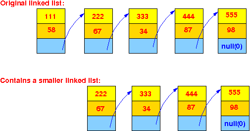

- To make the material more concrete,
I will use this List structure to
illustrate the recursive serach algorithm
on
linked lists:
public class List { int key; int value; List next; // This is a "reference" (= address) variable !! }A List object has the following structure:
The offset of the field key from the base address is 0
The offset of the field value from the base address is 4
The offset of the field next from the base address is 8
Sample list:
- Problem description:
- Given a linked list
(with list element of the above structure) pointed to
by the variable head
- Write a recursive function
int Lookup(List h, int searchKey)
that returns:
- The value for the key searchKey if the key is found in the list that start at h
- The value 0 if the key is not found in the list (we assume for simplicity that the value 0 will not correspond to any search key)
- Given a linked list
(with list element of the above structure) pointed to
by the variable head
- Now we will develop the
recursive function
int Lookup(List h, int searchKey)
To understand how you can come up with a recursive algorithm, you must understand the recursive nature of a linked list:
 Due to the recursive nature of a linked list, we can use divide and conquer to solve the original problem using the solution of a smaller problem:
- The outcome of
a search for
searchKey in
this list:
is the same as outcome of a search for searchKey in:
When we write the recursive lookup algorithm for an (input) list:
int Lookup( List h, int searchKey ) { // We are developing this algorith right now... }we must be aware what the parameters represent !!!
The input parameter h will represent the original list:
- The outcome of
a search for
searchKey in
this list:
- In order to find
the searchKey in the
list starting at h,
we must compare
every key value in the
list against the
searchKey.
So the Lookup( ) method will be like this:
int Lookup( List h, int searchKey ) { if ( list h is empty ) return 0; // Not found is represented by 0 else if ( key in first list element == searchKey ) return (value in first list element); else if ( key in 2nd list element == searchKey ) return (value in 2nd list element); else if ( key in 3rd list element == searchKey ) return (value in 3rd list element); and so on.... }Notice that the work done in the highlighted area is the task:
- Lookup the
searchKey
in this sub-list
of the original list:
So we can replace this code using a Lookup( ) call to search the sublist:
int Lookup( List h, int searchKey ) { if ( list h is empty ) return 0; // Not found is represented by 0 else if ( key in first list element == searchKey ) return (value in first list element); else return Lookup( h.next, searchKey ); }So in essence, we have implemented the following search algorithm:
The if-statement:
if ( key in first list element == searchKey )is the (1) Search here part.
And the else part:
return Lookup( h.next, searchKey );is the (2) Lookup in sub-list part.
(And we must handle the empty list as a special case or else the empty list will cause an error).
- Lookup the
searchKey
in this sub-list
of the original list:
- Using the design above,
we can now flesh out the
recursive
Lookup( ) algorithm in
Java syntax:
(You just need to use Java expressions to replace the pseudo code in the description)
The Lookup method in Java (without the class, we can add that later) is:
static int Lookup( List h, int searchKey ) { if ( h == null ) return 0; // Not found is represented by 0 else if ( h.key == searchKey ) return (h.value); else return Lookup( h.next, searchKey ); }In CS170 or CS171, you would have learn that the cases h == null and h.key == searchKey are called the base cases.
I hope with this approach, you get a feel on how the recursion was introduced:
- We first solve the
problem without
recursion
- Then we recognize that
all the work done
by some part of the
algorithm is the
same as the
solution of
a smaller problem
- We replace that part
with a recursive call
- The remaining part that are not covered will become the bases cases.
- We first solve the
problem without
recursion
- Example Program:
(Demo above code)

- Prog file: /home/cs255001/demo/asm/9-list-recurison/Lookup.java
How to run the program:
- To compile: javac Lookup.java
- To run: java Lookup
- Pretend that you are hold on to a
linked list and you need
look up the
value for the key 333:
And you are lazy and refuse to traverse the linked list.
The only action that you want to do is:
- Check the first element in the list
Convince yourself that this search procedure will find the correct value:
- If the
list is not empty:
check if
the first element contains
the searchKey
If so, you have found the searchKey and you should return the corresponding value
- Otherwise,
you delegate the
look up operation to
someone else
I.e.: you hire a searcher to find the search key for you
When this hired person completes his task (i.e., find the searchKey and return the corresponding value), you will use his result as if you have found it (and you return this result).
- When you code this
lazy man's search algorithm, you will
have the following algorithm:
/* --------------------------------------------------- Lookup( ) describes how a lazy guy will lookup a search key in a list that start at h --------------------------------------------------- */ int Lookup( List h, int searchKey ) { /* ----------------------------------------------------- I (the lazy guy) will only look at the first element if the list is not empty ----------------------------------------------------- */ if ( list h is empty ) return not found else if ( key of first element in list == searchKey ) return value in first element else { Hire someone to find "searchKey" in sublist (h.next); Take what he give me and return it } }Again: you should convince yourself that this lazy guy algorithm will achieve the desired result (and find the value) --- you must have faith that the hired searcher is competent and he will do his job correctly.
If you translates these actions into Java constructs, you will also get the same algorithm as discussed above:
static int Lookup( List h, int searchKey ) { /* ----------------------------------------------------- I (the lazy guy) will only look at the first element if the list is not empty ----------------------------------------------------- */ if ( h == null ) return 0; // Not found is represented by 0 else if ( h.key == searchKey ) return (h.value); else // Lookup(h.next, searchKey) = Hire someone to find "searchKey" // in sublist (h.next) return Lookup( h.next, searchKey ); }